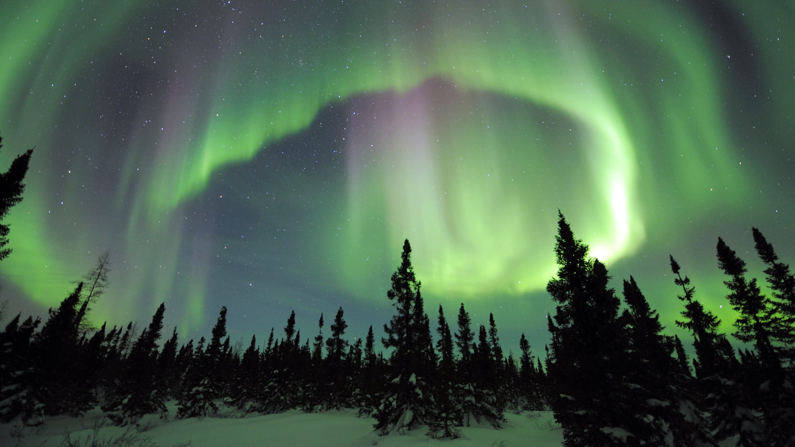
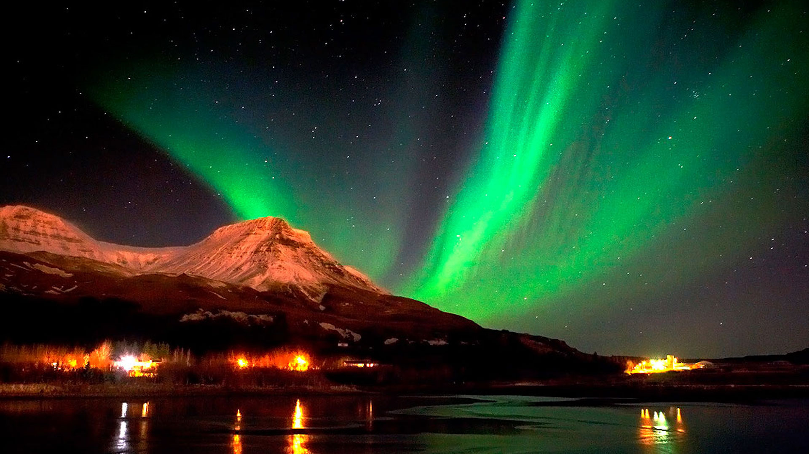

Norway, home of the northern lights
The northern lights convey a sense of being at the very edge of the world and getting a rare glimpse into the endless universe we are all just a tiny part of.
On a very basic level the northern lights are quite simple to explain. The lights come at night, when the sky is dark. It's like a celestial ballet of light dancing across the night sky, with a colour palette (green, pink, violet) obtained from a really cool fashion show from the 1980s. You can see pictures or videos of it, but only those lucky enough to experience it first hand can fully comprehend the almost divine attraction that the northern lights possess.
To the locals in Northern parts of Norway, the northern lights are a part of their life, as they light up the night sky in surroundings dominated by snow, rugged mountains and harbors. In this area the aurora has been, and still is, a fertile source for art, mythology and legends.
To others, like celebrity scientist Neil deGrasse Tyson, the phenomenon of the northern lights is more of a unique example of just how beautiful science can be. "It's a curious thing about the universe", he says, "behind the most stunning sights to behold, lies some of the most challenging problems in physics".